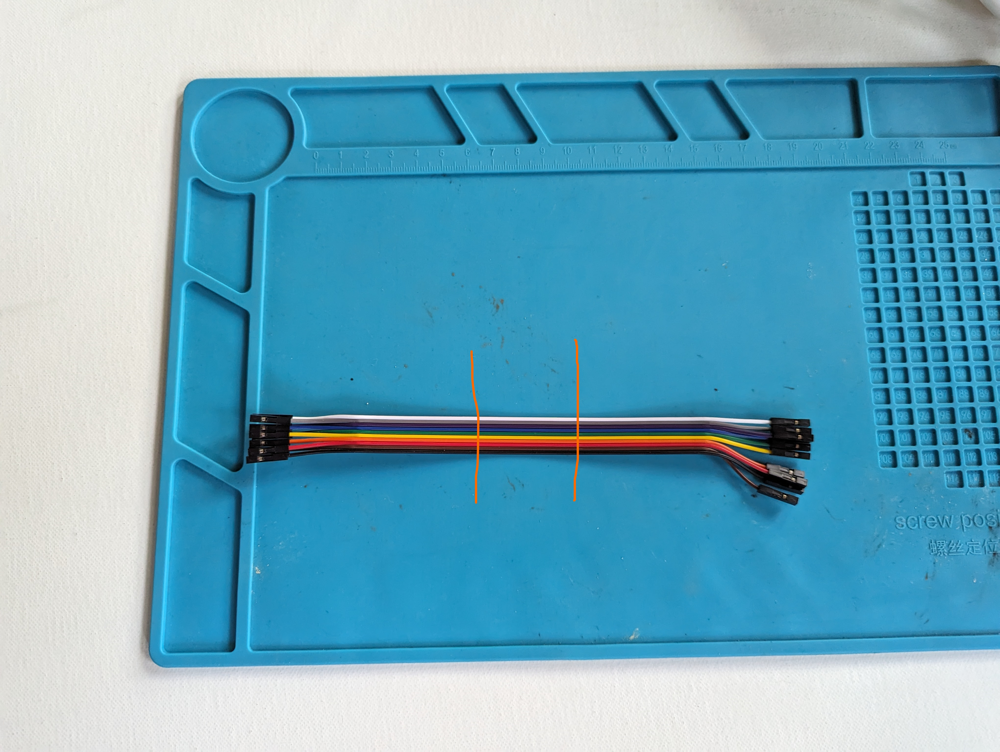
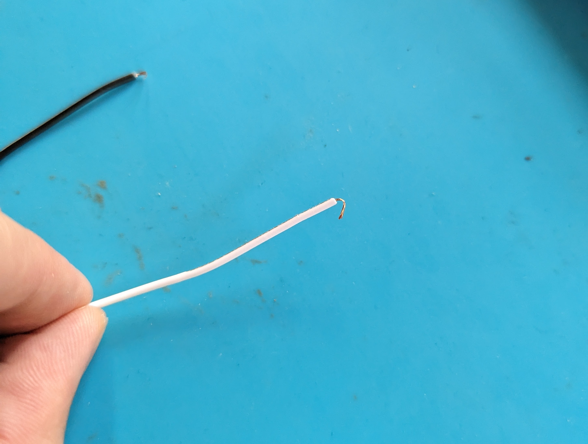
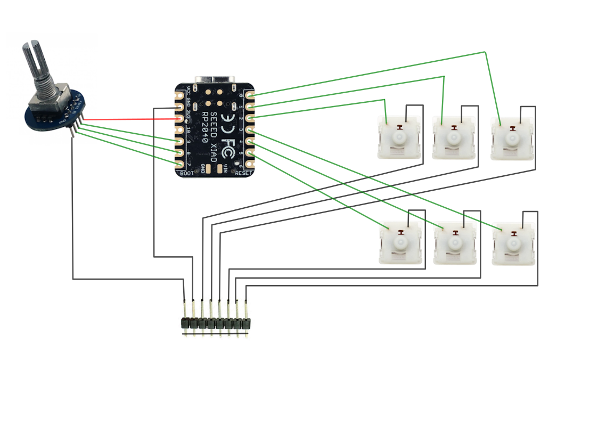

The keyboard switches
Each macropad has 6 keyboard switches found in mechanical keyboards (you too can annoy your coworkers starting right now!). In this section we'll solder some wire to them, connect them to the board and make it act as a tiny keyboard.
Soldering
Each one of these switches needs 2 wires soldered to them.
First we'll prepare the wires, grab 6 of the long jumper wires and cut them in 3 pieces.

Next we'll strip the wires, you should have 12 in total. Now we'll solder the wires to our switches, this can be a bit tricky. I like to fold a small loop on the end of the stripped wire and then hook it over the pin of the switch and hold it in place with helping hands or tweezers.



Wiring it up
Follow the wiring diagram to connect everything together. Every keyboard switch should have one pin going to the common ground (bottom of the image) and one pin to the microcontroller (pins 0 to 5).

Firmware
To read all of our key inputs we'll be using the keypad built-in library of CircuitPython.
Read this tutorial up to the second page, we'll base our code on their example. Our keys are set up a bit differently though, so I'll help you with the setup code:
KEY_PINS = (
board.D1,
board.D2,
board.D3,
board.D4,
board.D5,
board.D6,
board.D7 # Rotary encoder click
)
KEYCODES = (
Keycode.ONE,
Keycode.TWO,
Keycode.THREE,
Keycode.FOUR,
Keycode.FIVE,
Keycode.SIX,
Keycode.SEVEN
)
The built in neopixel is a bit different as well, we only have the one.
And instead of lighting up a specific NeoPixel, we'll always light up our single one. Replace neopixels[key_number] = ON_COLOR with neopixel.fill(ON_COLOR).
If everything works out, you should have a tiny keyboard that sends the keys from 1 to 6, and the built in LED changes colour when a key is pressed.
Completed code
import rotaryio
import board
import keypad
import neopixel
import usb_hid
from adafruit_hid.keyboard import Keyboard
from adafruit_hid.keycode import Keycode
from adafruit_hid.consumer_control import ConsumerControl
from adafruit_hid.consumer_control_code import ConsumerControlCode
encoder = rotaryio.IncrementalEncoder(board.D9, board.D10)
cc = ConsumerControl(usb_hid.devices)
button_state = None
last_position = encoder.position
KEY_PINS = (
board.D1,
board.D2,
board.D3,
board.D4,
board.D5,
board.D6,
board.D7 # Rotary encoder click
)
KEYCODES = (
Keycode.ONE,
Keycode.TWO,
Keycode.THREE,
Keycode.FOUR,
Keycode.FIVE,
Keycode.SIX,
Keycode.SEVEN
)
ON_COLOR = (0, 0, 255)
OFF_COLOR = (0, 20, 0)
keys = keypad.Keys(KEY_PINS, value_when_pressed=False, pull=True)
neopixel = neopixel.NeoPixel(board.NEOPIXEL, 1, brightness=0.4)
neopixel.fill(OFF_COLOR)
kbd = Keyboard(usb_hid.devices)
while True:
event = keys.events.get()
if event:
key_number = event.key_number
# A key transition occurred.
if event.pressed:
kbd.press(KEYCODES[key_number])
neopixel.fill(ON_COLOR)
if event.released:
kbd.release(KEYCODES[key_number])
neopixel.fill(OFF_COLOR)
current_position = encoder.position
position_change = current_position - last_position
if position_change > 0:
for _ in range(position_change):
cc.send(ConsumerControlCode.VOLUME_INCREMENT)
elif position_change < 0:
for _ in range(-position_change):
cc.send(ConsumerControlCode.VOLUME_DECREMENT)
last_position = current_position
Next up assembly!